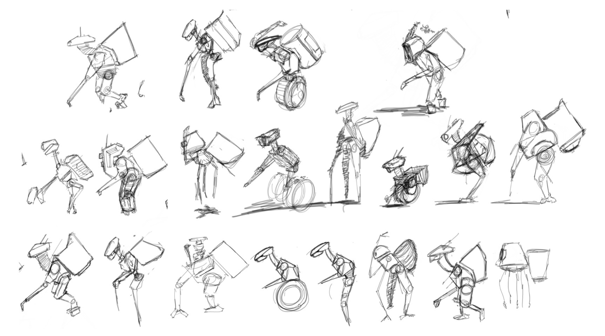

I used images of Pemulung workers as underlay sketches to pull form and poses that the droid would mimic in the Star Wars Universe.
After an initial round of sketching, I found the solo wheel droid to be a good fit because of the energy and action it held in its form and functionality.